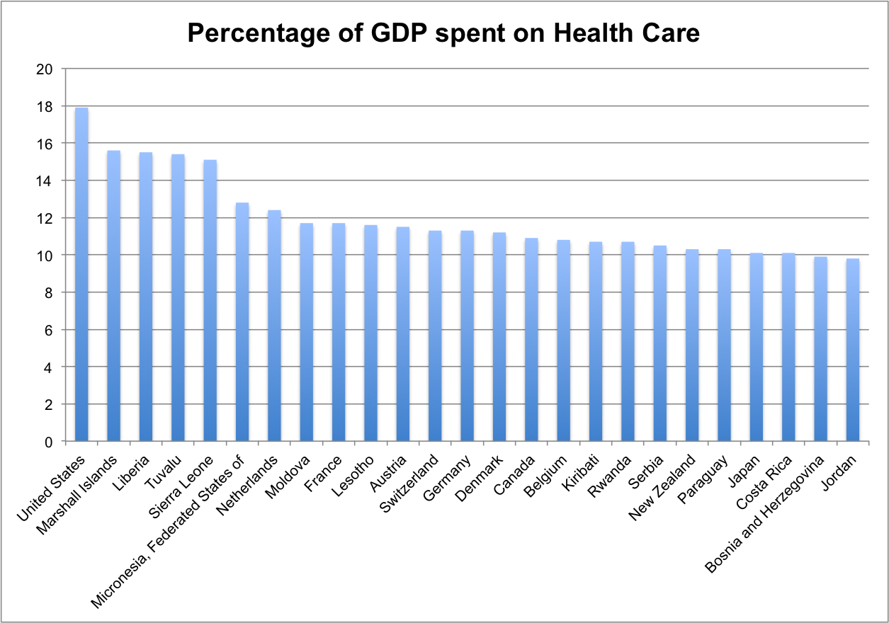

We looked up our health care costs and how our health care ranks in comparison to world health care. "The World Health Organization carried out the first ever analysis of the world's health systems. Using five performance indicators to measure health systems in 191 member states, it found that France provides the best overall health care followed among major countries by Italy, Spain, Oman, Austria and Japan." 1

"The U.S. health system spends a higher portion of its gross domestic product than any other country but ranks 37 out of 191 countries according to its performance, the report finds. The United Kingdom, which spends just six percent of GDP on health services, ranks 18th . Several small countries – San Marino, Andorra, Malta and Singapore are rated close behind second- placed Italy." 2
We've studied, and run the numbers from paper after paper, source after source(look below for our sources) - and realized something needs to change with US Health Care.
Our goal is to pool our money together and buy universal health care. We have a bank account with U.S. Bank for money to be deposited from virtually anywhere in the US. With jars all over this great nation we will collect money to launch the conversation to buy universal health care. At the bottom of this page is a poster for your window and label to print and put on your jar that says "I support universal health care". The jars can be in your home or business.
With your help we will have health care for everyone, for less money.
We have jars all over this great nation - and if you choose to setup your own jar please let us know and we'll add you to the map.
© we ran the numbers